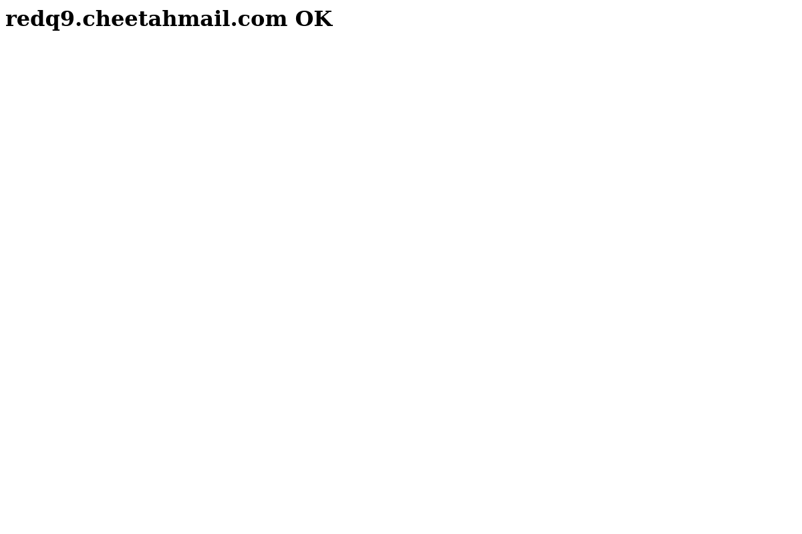

Screeshot
Port 80 Port 443
 
Dig Info
; <<>> DiG 9.11.4-2-Debian <<>> ex.seek.com.au
;; global options: +cmd
;; Got answer:
;; ->>HEADER<<- opcode: QUERY, status: NOERROR, id: 21869
;; flags: qr rd ra; QUERY: 1, ANSWER: 7, AUTHORITY: 0, ADDITIONAL: 1
;; OPT PSEUDOSECTION:
; EDNS: version: 0, flags:; MBZ: 0x0005, udp: 512
;; QUESTION SECTION:
;ex.seek.com.au. IN A
;; ANSWER SECTION:
ex.seek.com.au. 5 IN A 208.50.56.233
ex.seek.com.au. 5 IN A 63.149.195.18
ex.seek.com.au. 5 IN A 208.50.56.232
ex.seek.com.au. 5 IN A 38.107.108.51
ex.seek.com.au. 5 IN A 38.107.108.50
ex.seek.com.au. 5 IN A 67.134.222.254
ex.seek.com.au. 5 IN A 8.33.184.254
;; Query time: 334 msec
;; SERVER: 192.168.58.2#53(192.168.58.2)
;; WHEN: Tue May 21 11:02:47 EDT 2019
;; MSG SIZE rcvd: 155
Host Info
ex.seek.com.au has address 8.33.184.254
ex.seek.com.au has address 67.134.222.254
ex.seek.com.au has address 38.107.108.50
ex.seek.com.au has address 38.107.108.51
ex.seek.com.au has address 208.50.56.232
ex.seek.com.au has address 63.149.195.18
ex.seek.com.au has address 208.50.56.233
ex.seek.com.au mail is handled by 10 a.mx.ex.seek.com.au.
ex.seek.com.au mail is handled by 10 b.mx.ex.seek.com.au.
Response Header
HTTP/1.1 200 OK
Date: Tue, 21 May 2019 15:03:09 GMT
Server: Apache
Last-Modified: Fri, 30 Oct 2015 19:14:03 GMT
Accept-Ranges: bytes
Content-Length: 141
Connection: close
Content-Type: text/html
Nmap Results
nmap -sV -T3 -Pn -p3868,3366,8443,8080,9443,9091,3000,8000,5900,8081,6000,10000,8181,3306,5000,4000,8888,5432,15672,9999,161,4044,7077,4040,9000,8089,443,7447,7080,8880,8983,5673,7443
Starting Nmap 7.70 ( https://nmap.org ) at 2019-05-21 11:03 EDT
Nmap scan report for ex.seek.com.au (8.33.184.254)
Host is up (0.28s latency).
Other addresses for ex.seek.com.au (not scanned): 63.149.195.18 38.107.108.51 38.107.108.50 67.134.222.254 208.50.56.233 208.50.56.232
Not shown: 32 filtered ports
PORT STATE SERVICE VERSION
443/tcp open ssl/http Apache httpd
Service detection performed. Please report any incorrect results at https://nmap.org/submit/ .
Nmap done: 1 IP address (1 host up) scanned in 28.35 seconds